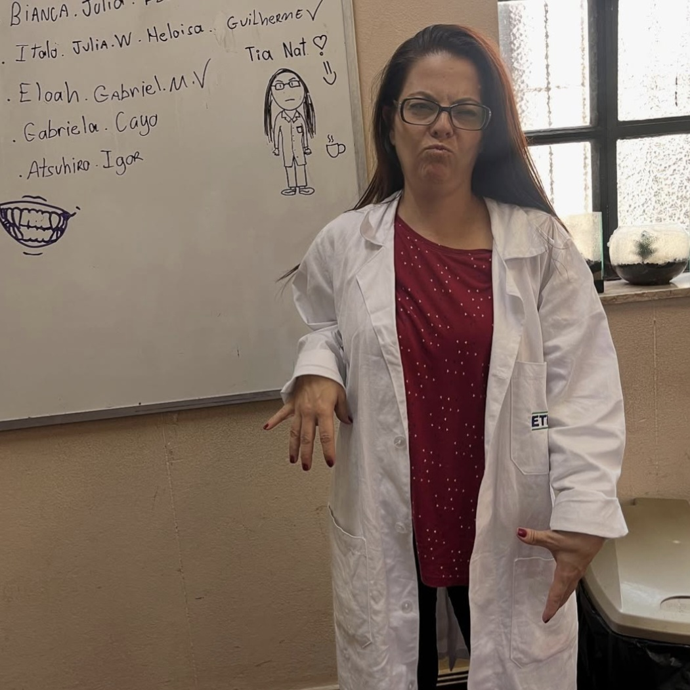
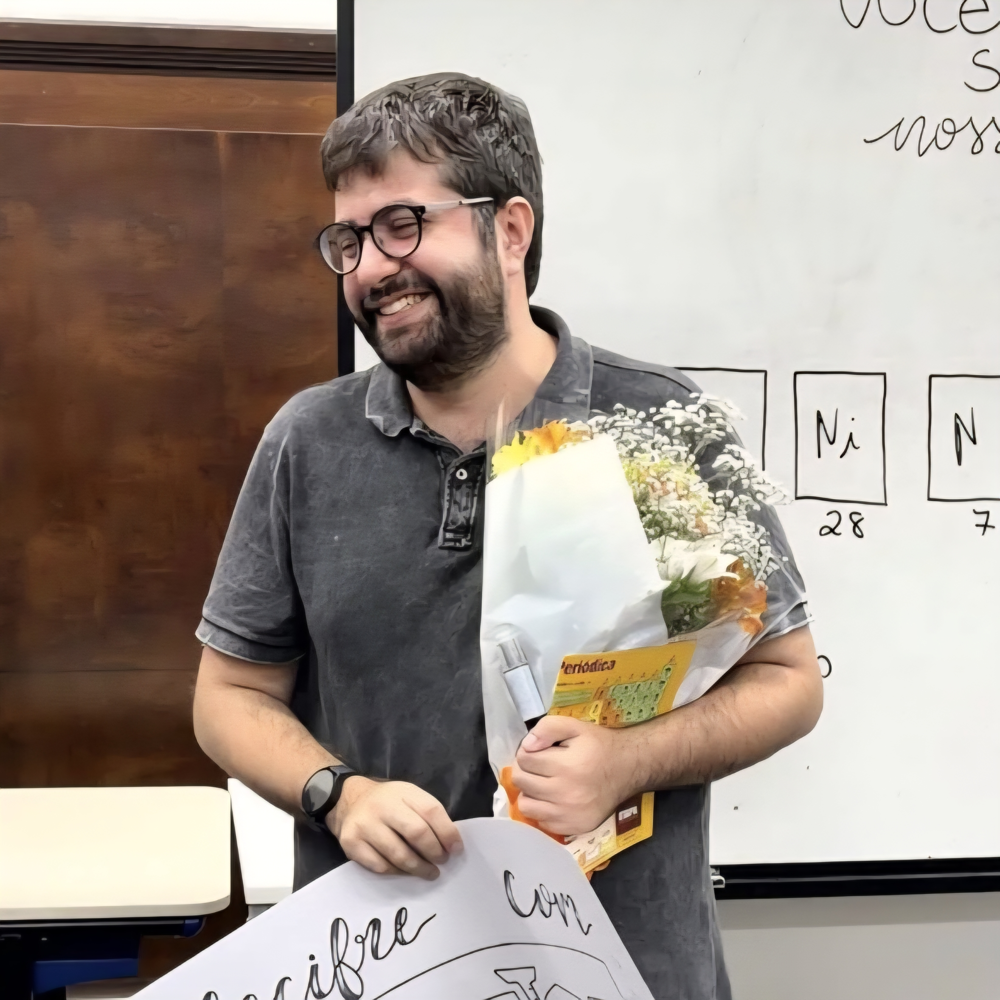
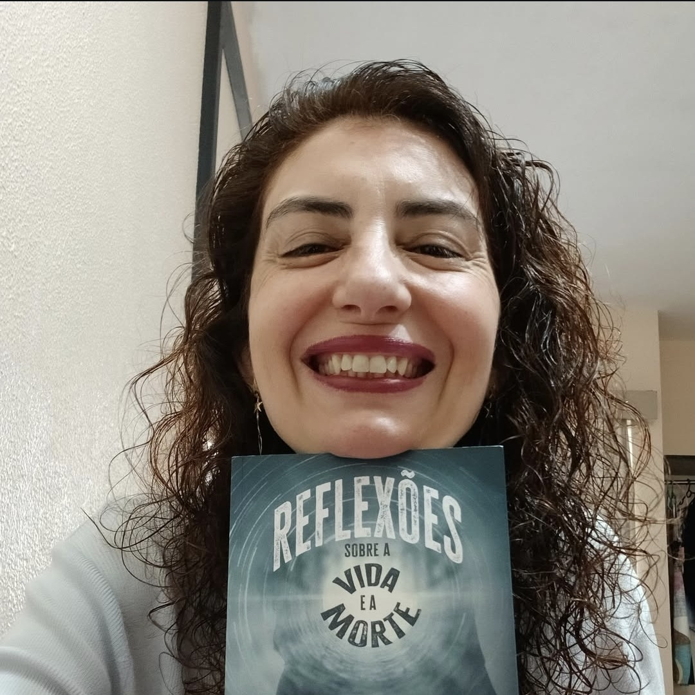
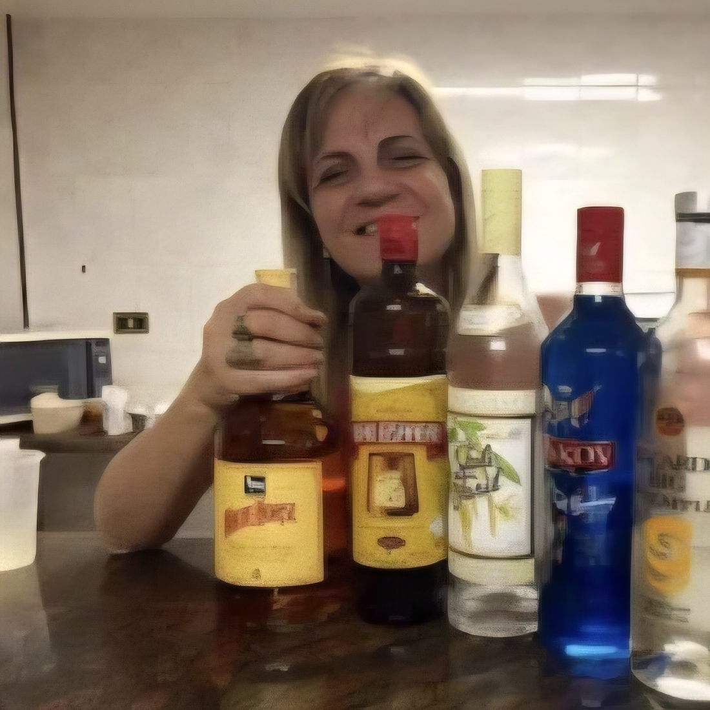

vindas ao melhor curso da ETESP!
MEIO AMBIENTE
Introdução
vindas ao melhor curso da ETESP!
O curso de Meio Ambiente é famoso na escola pela grande população de mulheres bonitas e pessoas de cabelo colorido, mas somos muito mais do que isso, somos os melhores dessa escola! mas com grandes poderes vem grandes responsabilidades!
Você pode ter pensado que esse seria o curso mais fácil (muitos de nós pensamos isso quando nos inscrevemos, infelizmente) mas é um curso com muitos desafios. Sempre com laudos para serem feitos, cadernos para completar, peixes para cuidar, amostras para recolher, vamos vivendo assim sempre surtando mas orgulhosos de explorar as áreas verdes de São Paulo!
Apesar de muito estresse com apresentações em slide, laudos para colocar em ABNT, revisão de lições com seus amigos.. O curso de M.A. é com toda certeza o que mais vai te dar alegria, o amor pelo curso não vai parar de crescer!
Já segue lá!!: @m.a.etesp no ig
Ajude seus amigos!
Nosso curso tem muitas responsabilidades e como bons procrastinadores, todo final de bimestre é um surto. Como dica de ouro, sempre conte com seus amigos, amigos que vocês levarão para a vida, sempre se ajudem, principalmente nas lições! É muito bem vindo emprestar seu caderno para o seu amigo copiar, mandar seu laudo para seus amigos compararem, copiar uma coisinha ali e aqui. Lembrem também que seus veteranos estão aqui para ajudar! Não tenham medo ou vergonha de nos pedirem uma prova, diários de bordo antigos, dicas do curso, sempre que precisarem deem um help tanto nos vets quanto nos vermes (apesar que de todos os vermes nós queremos distância)
Semana de M.A.
Semana de M.A.
Poucos têm o privilégio de ter uma semana apenas para eles!! A Semana do Meio Ambiente é uma semana muito querida por todos da escola, uma forma de comemorar nós mesmos. É cheia de oficinas, apresentações e o CineM.A.!!
Labs
Laboratório não é terra de ninguém!
O laboratório da ETESP é de uso de todos, mas somos nós que passamos mais tempo lá. Então, tomem cuidado com os materiais e o ambiente, somos grandes responsáveis por ele. Nunca comam ou bebam lá e sempre encostem as cadeiras pela educação (etiqueta aqui pessoal)
Materiais
O principal material para nós de M.A. é jaleco, vocês bixos não enfrentarão tão cedo esse problema mas futuramente, não poderão entrar no laboratório sem. Mas não se desesperem, antes de comprarem vejam se algum veterano ou ex-aluno pode passar para frente. Além disso, os materiais que terão que se preocupar em comprar futuramente serão testes de pH, amônia e etc. e principalmente o tão temido diário de bordo
Saídas Técnicas
O curso de Meio Ambiente é um dos mais práticos que existem! Para fazer dos seus dias na ETESP algo mais divertido, é comum nós sairmos bastante ao longo do ano, vocês bixos tem o costume de ir em diversos parques, seja o Piqueri (fav da Nat) ou o Ibirapuera. É de extrema importância que você vá para todas as saídas que conseguir, isso compõe além da nota, a experiência total do que vemos dentro da sala de aula.
Dicas de Ouro
Ocasionalmente acontece, mas tomem cuidado com as vidrarias, o estoque não é infinito e ela é super cara.
Não briguem (tão cedo) com a Yara, são dois longos anos.
Mantenha suas atividades sempre em ordem.
Agradeça todos os dias por estar longe do demônio dessa escola (o Duda, professor de edi).
Não se desesperem com as lousas do Cristian, parecem horríveis, mas separando as coisas importantes você se garante.
Seja o mais feliz possível dentro desse curso, é uma experiência que você vai levar pra vida, converse com todos, não só da sua sala e não só do seu ano, é tudo novo então se joga de cabeça!
Professores
Natália
Essa senhora que mais convivimos durante os anos é a nossa coordenadora de curso. O que ela não tem de altura ela tem de exigência, mas como ela mesma nos trata como família, é uma mãe para nós dentro do curso. Ela não é a pessoa mais fácil de se lidar, mas quem é?? Só avisando, as aulas dela geralmente são no laboratório e toda aula de laboratório TEM QUE USAR CALÇA E SAPATO FECHADO (NÃO VALE CROCS)!!
Cristian
Esse professor tão querido vai falar o que der na cabeça dele, e muitos de nós duvidamos se lá estão todos os parafusos. Brincadeiras a parte, esse professor ama uma IA e separa as aulas em aulas práticas e em sala, todas as práticas são incríveis e todas as em sala são perguntas de IA, então é até que fácil! (Até chegar no relatório de fim de bimestre.)
Matheus
Não sabemos se vocês terão aulas propriamente ditas com ele, mas que vocês terão contato com esse cara, vocês terão!! Ele é responsável pelo laboratório além de ser auxiliar da coordenação, mas acima de tudo é o cara mais fofo da escola!! Todo mundo tem uma relação muito boa com ele (mas ele ama mais o nosso curso). Ele já foi aluno da ETESP e do nosso curso, então entende muito do que nós sofremos diariamente. Sempre pronto para apoiar e ajudar qualquer um, pode ter certeza que vocês vão contar muito com ele!
Fefão
O Fefão é O cara! É professor de geografia da escola, mas para nós ele também é um professor do técnico. As aulas do Fefão são bem de boa, só prestar atenção e anotar tudo que ele explicar e vai se dar bem nas provas (ele possui o melhor método de avaliação da escola, nem pense em tentar colar). Uma dica: a sala dele é a melhor da escola, sempre levem casacos mesmo se estiver calor, o ar condicionado de lá é impecável!
Eltiza
A professora Eltiza é uma das mais tranquilas do curso, sempre tá bem séria e com cara de quem não aguenta mais dar aula. Mas quando ela se irrita ela pega um sino e começa a bater na mesa, ela claramente não sabe usar um sino. Apesar disso, as provas dela são super tranquilas (bem coláveis) e praticamente ninguém fica de rec com ela. O único lado ruim é que ela pega um pouco da hora do almoço para fazer chamada.
Yara
Essa aqui é uma professora o quanto… diferente. De forma bem direta, se você lamber as bolas dela, não terá problemas com a tal, mas querendo ou não essa moça vai te dar uma raivinha, aguentem firme, serão 2 anos copiando tudo dos slides dela, mas logo passa!!